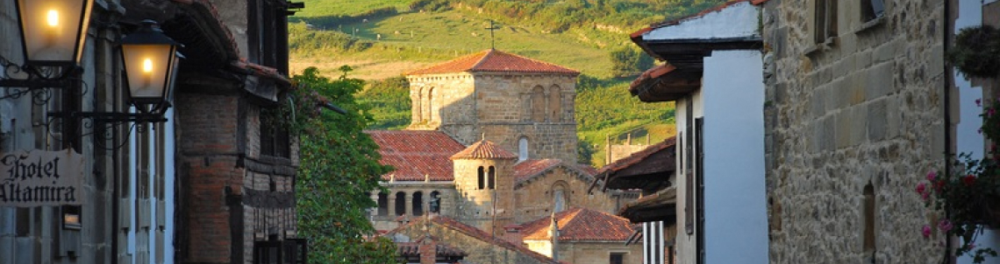
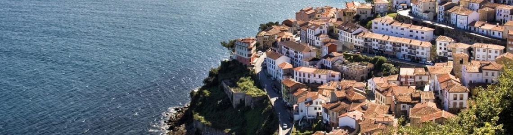

La vida estresante de las grandes ciudades y la crisis del COVID-19 han hecho surgir un creciente interés por los pueblos, sobre todo aquellos con encanto y rodeados de naturaleza. Ahora que muchas personas pueden teletrabajar, la posibilidad de cambiar un piso en medio de la ciudad por una residencia más espaciosa, económica y en mitad del campo es una opción muy atractiva que cada vez gana más adeptos.
Debido a ese creciente interés, surge la idea de crear una aplicación web donde los interesados en visitar o instalarse a vivir en un pueblo puedan encontrar información relevante, organizada y actualizada sobre las mejores opciones que existen en una región determinada. Por otra parte, quienes vivan ya en un pueblo y estén interesados en darlo a conocer y promocionarlo podrán publicar información sobre los atractivos que ofrece, sus características, viviendas o locales disponibles.
